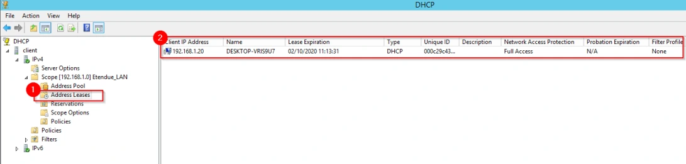

Le support est transcrit et structuré pour la lecture. Les valeurs secrètes et les noms propres au centre de formation sont neutralisés dans les exemples concernés.
Cette démonstration décrit les différentes étapes relatives à la configuration des options ainsi que de l’obtention du bail par un client.
Avoir installé et configuré une machine virtuelle sous Windows 10, sans IP fixe.
Cliquer sur le raccourci précédemment créé afin d’ouvrir la console DHCP. Dérouler le nœud de l’étendue (1) précédemment créée, faire un clic droit sur la ligne Scope Options (2) puis sur le menu Configure Options (3). Se positionner sur l’option 006 (4). Indiquer l’adresse IP d’un serveur DNS de votre infrastructure (5) puis cliquer sur le bouton Add (6). L’adresse IP qui est en haut de la liste sera le DNS préféré des machines clientes du service DHCP (7). Une fois l’ajout de l’adresse IP terminée, cliquer sur le bouton OK (8).
Se connecter sur la machine virtuelle Windows 10. Lancer une invite de commande, puis indiquer
la commande ipconfig /renew (1) afin d’interroger le serveur DHCP. Une fois le processus DORA
terminé, le client se voit attribuer une configuration IP via le DHCP (2). Indiquer la commande
ipconfig /all afin de vérifier que le serveur DNS est bien celui ou ceux configurés précédemment
(3).Se connecter sur la machine virtuelle hébergeant le serveur DHCP. Vérifier dans les baux d’adresses IP (1) que le client est bien présent (2).
